ENGINEERING BLOG / CHAPTER 06 OF 10
Fast Inference and Training at Scale
The fundamental bottleneck: Autoregressive generation calls the full Transformer once per output token. A 500-token response requires 500 forward passes through a multi-billion-parameter model. This section covers engineering techniques that reduce the cost of each forward pass or reduce the number of forward passes needed.
Each optimization targets a different part of the cost:
Problem Solution
────────────────────────────────── ─────────────────────────
Recomputing past K,V every step → KV Caching (5.1)
KV cache too large (too many heads) → GQA (5.2)
KV cache memory fragmentation → PagedAttention (5.3)
KV cache too large (high dimension) → MLA (5.4)
Too many forward passes of big model→ Speculative Decoding (5.5)
→ Multi-Token Prediction (5.6)6.1 — KV Caching
Paper: Standard practice (widely adopted by 2021–2022).
The Problem
In self-attention, every token must interact with every previous token. When generating token , the model computes:
- — the hidden state of token
- , — learned projection matrices
- , — the key and value vectors for token
Then attention is computed between the current query and all past keys and values. Without caching, this entire computation repeats from scratch at every generation step. The total compute scales as:
for a response of tokens. Enormously wasteful.
The Solution: Cache and Reuse
Past tokens never change. Once computed, and for token are fixed for the rest of the generation. We store them:
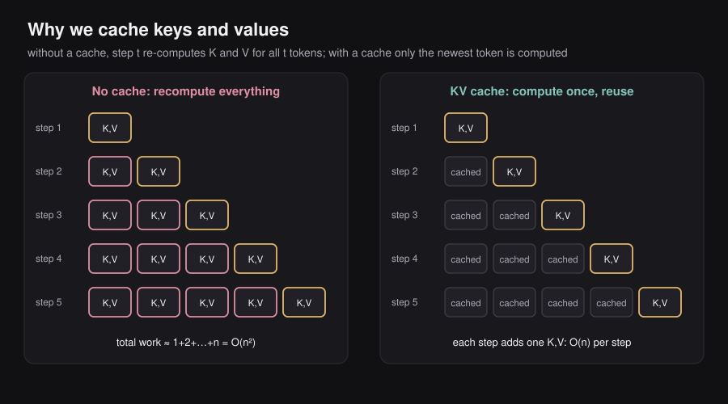
At step , only three things need computation:
- — query for the new token
- — key for the new token
- — value for the new token
Then attend over the full cache plus the new token’s K,V. The cost per step is now instead of .
Why Not Cache Queries ()?
Queries are specific to the token asking the question. represents “what information does token need?” Future tokens have their own informational needs — they’ll produce their own and never reuse . Caching queries provides no benefit because they’re never reused.
Keys and values, by contrast, represent past information that every future token needs to attend to. They are reused at every subsequent step.
KV Cache Memory Cost
The KV cache grows linearly with sequence length:
- — one for K, one for V
- — sequence length (grows during generation)
- — hidden dimension of the model
- — number of Transformer layers (KV cache per layer)
- — e.g., 2 bytes for float16
For LLaMA-2 70B with : approximately 9 GB of GPU memory just for the KV cache. This is what motivates the next three optimizations.
6.2 — Grouped Query Attention (GQA)
Paper: Ainslie et al., 2023.
The Problem with Standard Multi-Head Attention (MHA)
In standard MHA, there are attention heads. Each head has its own independent key matrix and value matrix. So the KV cache holds tensors per layer per token — it scales linearly with the number of heads.
For LLaMA-2 70B with heads: the KV cache is proportional to 64 key tensors plus 64 value tensors per layer.
Multi-Query Attention (MQA): Too Extreme
The simplest reduction: use just one shared KV head pair for all query heads.
Cache shrinks by . But quality degrades noticeably — sharing a single set of keys and values across all query heads limits what each query head can focus on.
Grouped Query Attention (GQA): The Sweet Spot
GQA divides the query heads into groups. All query heads within the same group share one KV head pair:
- Each group of query heads shares one key head and one value head
- KV cache shrinks by
- Quality loss is minimal when is not too small
GQA interpolates between MHA and MQA:
MHA (standard): G = h (every query head has its own K,V)
GQA: 1 < G < h (groups share K,V)
MQA: G = 1 (all heads share one K,V)Real example (LLaMA-3): query heads, KV heads. Cache is smaller than MHA with negligible quality loss.
GQA is now the industry standard. Nearly all modern LLMs (LLaMA-2, LLaMA-3, Mistral, Qwen, Falcon) use it.
6.3 — PagedAttention
Paper: Kwon et al., 2023. Efficient Memory Management for Large Language Model Serving with PagedAttention. (The core innovation of the vLLM inference engine.)
The Problem: Memory Waste from Pre-allocation
When serving inference requests, the system must allocate KV cache memory for each request. But the final sequence length is unknown at the start — the model keeps generating until it decides to stop.
Naive systems pre-allocate a contiguous block of memory for the maximum possible sequence length upfront. For a model with a 128K token context, every request reserves memory for 128K tokens — even if the actual response is 200 tokens.
Naive pre-allocation for one request:
[■■■■■■■■■■□□□□□□□□□□□□□□□□□□□□□□□□□□□□□□□□□□□□□□□□□□□□]
(tokens generated) (pre-allocated but empty — wasted memory)This is enormously wasteful, especially when serving many concurrent requests.
The Solution: Paging (Borrowed from OS Virtual Memory)
PagedAttention divides the KV cache into fixed-size blocks (or pages). These blocks:
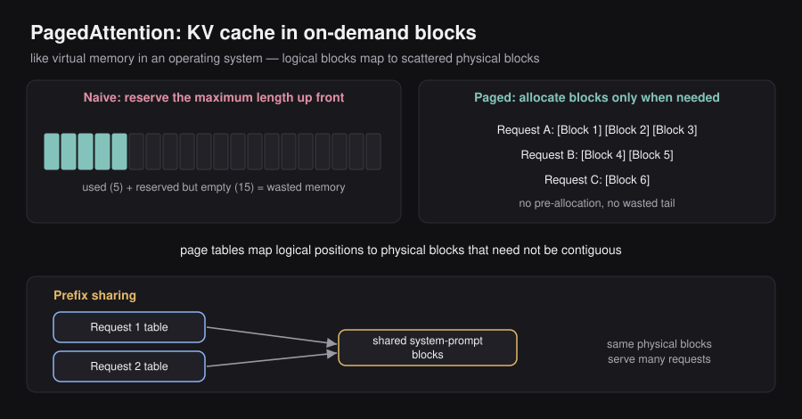
- Are allocated on demand as the sequence grows (no pre-allocation)
- Do not need to be contiguous in physical memory
- Are managed via a page table that maps logical positions to physical blocks
With PagedAttention:
Request A: [Block 1][Block 2][Block 3]
Request B: [Block 4][Block 5]
Request C: [Block 6]
(blocks allocated only as needed; memory is fully utilized)Bonus: KV cache sharing. When multiple requests share a common prefix (e.g., same system prompt), PagedAttention can point multiple requests’ page tables to the same physical blocks — no duplication needed. This is called prefix caching.
Real-world impact: vLLM, which uses PagedAttention, achieves 2–4× throughput improvement over naive memory allocation. It is now the dominant open-source LLM inference engine.
6.4 — Multi-Head Latent Attention (MLA)
Paper: DeepSeek-V2, 2024.
The Problem: KV Cache Dimension
Even after GQA reduces the number of KV heads, the dimension of each KV representation remains large. For a model with hidden dimension and KV heads, the KV cache for tokens is:
For long sequences (100K+ tokens), this is still massive.
The Solution: Compress First, Cache the Compression
Instead of caching the full-rank and tensors, cache a compressed latent representation :
Compression step (run once per token during generation):
- — the token’s hidden state (large: -dimensional)
- — a learned down-projection matrix
- — the compressed latent (small: -dimensional, where )
Reconstruction step (run each time the cached token is accessed in attention):
- , — learned up-projection matrices
- , — the reconstructed full-rank key and value tensors (materialized on the fly)
What gets stored: Only (the small latent vector). The full and are reconstructed from whenever attention is computed — they’re never stored.
Tradeoff:
- Benefit: Cache is times smaller — DeepSeek reports 5–13× memory reduction vs. standard MHA
- Cost: A small reconstruction compute is needed at each attention step (the projection); this is much cheaper than the saved memory cost
Relationship to GQA:
- GQA reduces the number of KV heads (from to )
- MLA reduces the dimension of each KV representation (from to )
- They are complementary — you can apply both
6.5 — Speculative Decoding
Paper: Chen et al., 2023. Accelerating Large Language Model Decoding with Speculative Sampling.
The Problem: The Big Model Is Slow
A large, high-quality model (the “target” model) is expensive per forward pass. But autoregressive generation requires one forward pass per token. Generating 500 tokens = 500 expensive forward passes.
The Key Insight
Most of the time, a large and a small model agree on the next token. The next word in “I love machine learning and” is probably “deep” or “artificial” — you don’t need GPT-4 to figure that out. A much smaller, faster model (the “draft” model) can predict these easy cases correctly.
How Speculative Decoding Works
Phase 1 — Draft (cheap):
The small draft model autoregressively generates candidate tokens:
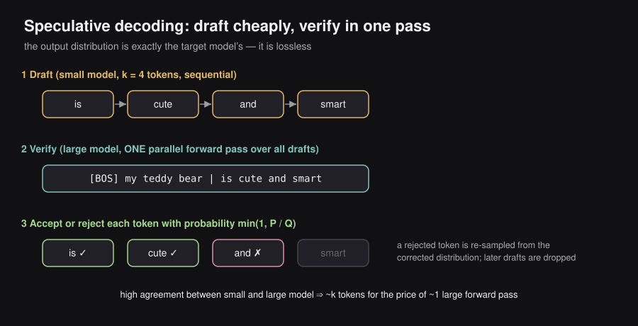
[BOS] my teddy bear → is cute and smart (4 draft tokens from ℳ_Q)
P₁ P₂ P₃ P₄Phase 2 — Verify (one target forward pass):
The large target model evaluates all draft tokens in parallel in a single forward pass:
Target model processes: [BOS] my teddy bear is cute and smart
↑ ↑ ↑ ↑
Computes Q₁ Q₂ Q₃ Q₄ Q₅ simultaneouslyThis parallelism is the magic: instead of slow forward passes of , it takes just one.
Phase 3 — Accept or Reject:
For each draft token with draft probability and target probability :
- — probability the target model would have assigned to token
- — probability the draft model assigned to token
- — acceptance probability
Interpretation:
- If : the target model is at least as confident as the draft → accept for sure ().
- If : the draft was overconfident → accept with probability . On rejection, sample a corrected token from the “residual” distribution , renormalized, and terminate this draft batch.
Distribution guarantee: The accepted token sequence is distributed exactly according to — the target distribution. Speculative decoding is lossless. It does not change output quality; it only changes speed.
Why it’s faster:
When and agree on most tokens (high acceptance rate), tokens are produced using approximately 1 target forward pass instead of . Reported speedups: 2–3× on standard text generation tasks.
Requirements for this to work:
- must be significantly faster than (typically smaller)
- must be sufficiently aligned with (similar training, same tokenizer) to have a high acceptance rate
- Low acceptance rate → few tokens accepted per verify pass → no speedup
6.6 — Multi-Token Prediction (MTP)
Paper: Gloeckle et al., 2024. Better & Faster Large Language Models via Multi-Token Prediction.
The Standard Single-Token Objective
Traditional LLM training uses a single prediction head: given hidden state at position , predict the next token :
- — hidden state produced by the Transformer at position
- — probability assigned to the correct next token
- — cross-entropy loss (we minimize this)
The Multi-Token Objective
MTP adds additional prediction heads, one for each future position up to steps ahead:
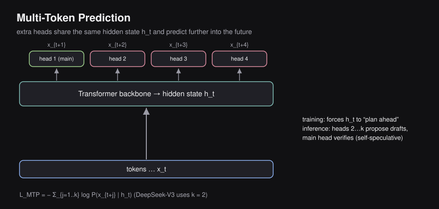
- — number of future tokens predicted simultaneously
- — offset into the future (1 = next token, 2 = two steps ahead, etc.)
- All heads share the same hidden state as input
Training benefit:
Predicting multiple future tokens forces the hidden state to encode richer, more forward-looking information about the sequence. The model must “plan ahead” — its representation needs to capture enough structure to predict not just the immediate next token but several subsequent ones. This enriches learned representations and has been shown to improve downstream task performance.
Inference benefit — self-speculative decoding:
At inference time, the additional heads produce draft tokens in a single forward pass. The main model’s token-1 head then verifies them as in speculative decoding — but no separate smaller model is needed. The model speculates on its own future outputs.
Standard inference:
Forward pass → predict x_{t+1} only
(repeat t times for t tokens)
MTP inference:
Forward pass → predict x_{t+1}, x_{t+2}, x_{t+3}, x_{t+4} simultaneously
(draft 4 tokens, verify with main head, accept if consistent)Connection to speculative decoding:
MTP heads play the role of the draft model . They are cheaper than a full forward pass (they share the backbone computation) and tend to be well-aligned with the main model (because they are the main model, with an extra head). This typically yields higher acceptance rates than using a separate smaller draft model.
DeepSeek-V3 uses MTP with (predicts 2 tokens ahead), contributing to its high throughput.
6.7 — Optimization Stack Summary
Optimization Problem It Solves Key Result
───────────────── ──────────────────────────────────────── ─────────────────────
KV Caching Redundant K,V recomputation every step O(n²) → O(n)
GQA KV cache too large (too many KV heads) h/G × memory reduction
PagedAttention KV memory fragmentation & pre-allocation 2-4× throughput gain
MLA KV cache too large (high dimension) 5-13× memory reduction
Speculative Decoding Too many target model forward passes 2-3× latency reduction
MTP Self-drafting (no separate draft model) Throughput improvement
Guided Decoding Structurally invalid output format Guaranteed format validityThese optimizations are composable — production systems like vLLM, SGLang, and TensorRT-LLM stack several simultaneously.
6.8 — Why the Old Way Was Wasteful
Before large language models, machine learning worked task-by-task. If a company needed spam detection, they trained a spam model. If they then needed sentiment analysis, they trained a separate sentiment model. Translation? Another model entirely. Each model was trained from random weights, on task-specific data, from scratch.
This is deeply inefficient, because all these tasks share the same underlying requirement: understanding language. Every model had to re-learn English grammar, vocabulary, and reasoning on its own, independently, from nothing.
Traditional ML — one model per task:
Data for spam → Spam detection model (trained from scratch)
Data for sentiment → Sentiment model (trained from scratch)
Data for translation → Translation model (trained from scratch)6.9 — The LLM Training Paradigm
The LLM era introduced a two-stage approach:
Stage 1 — Pretraining:
Train one massive model on the entire internet.
It becomes a universal language machine.
Stage 2 — Tuning:
Specialize that model for any task you want.
Spam / QA / Code / Medicine / ...The key insight: Language understanding is a separable foundation. You pay the enormous cost of learning it once, then amortize that cost across every downstream use case. A model that already understands English, code, math, and reasoning only needs a small additional push to become good at a specific task.
6.10 — What Pretraining Is and Why It Exists
What it is: Pretraining is the first and most expensive stage of building an LLM. The model is initialized with random weights and then trained on enormous amounts of raw text — books, websites, code, scientific papers — until it learns the patterns, facts, and structures that underlie language.
Why it exists: Because you need a model that already “knows” how language works before you can teach it to be useful. Without pretraining, every finetuning run would need to re-learn basic language from scratch. Pretraining builds the foundation that everything else stands on.
6.11 — The Training Objective: Next-Token Prediction
The objective function for pretraining is deceptively simple:
Given all previous tokens, predict the next token.
Formally:
Variable meanings:
- — the token at position (the one the model must predict)
- — all tokens before position (the context the model sees)
- — the probability the model assigns to the correct next token
- — log-probability; turns multiplication into summation; approaches zero when prediction is perfect
- The minus sign — turns maximum probability into minimum loss (gradient descent minimizes)
Intuition: The model is penalized for being surprised. If the correct next word is “Paris” and the model gives it 90% probability, the loss is small. If the model gives “Paris” only 1% probability (and was betting on “London”), the loss is large. Over trillions of predictions, the model learns to be less and less surprised — and to avoid surprise, it must internally model grammar, facts, reasoning, and style.
Context: [BOS] A teddy bear is
↓
Model predicts: "cute" ← next token
Training signal: Was "cute" the actual next word? If not, adjust weights.Why this simple objective creates powerful models: To correctly predict Paris in "The capital of France is ___", the model must have encoded geography. To predict return a + b in "def add(a, b):\n return ___", it must understand Python. Prediction forces the model to build rich internal representations of the world.
6.12 — Training Data
Pretraining requires massive, diverse text data. Modern LLMs are trained on mixtures of:
| Source | Why it is included |
|---|---|
| Common Crawl / web scrapes | Sheer volume; covers every topic, domain, writing style |
| Wikipedia | Clean, factual, encyclopedic text |
| GitHub | Code in many programming languages |
| StackOverflow | Code paired with explanations and reasoning |
| Books | Long-form coherent reasoning and narrative |
| arXiv / research papers | Scientific and technical knowledge |
Scale benchmarks:
| Model | Pretraining tokens |
|---|---|
| GPT-3 | ~300 billion |
| LLaMA 3 | ~15 trillion |
A useful approximation: 1 token ≈ ¾ of an English word. So 15 trillion tokens corresponds to roughly 11 trillion words — orders of magnitude more text than any human will ever read.
6.13 — FLOPs vs FLOPS — A Critical Distinction
These two terms are constantly confused. The distinction matters whenever you read about model training cost or hardware performance:
| Term | Full form | What it measures | Analogy |
|---|---|---|---|
| FLOPs (lowercase s) | Floating-Point Operations | Total arithmetic work a computation requires — a fixed quantity for a given job | Distance of a journey |
| FLOPS (uppercase S) | Floating-Point Operations per Second | How fast a piece of hardware can do arithmetic — a rate | Speed of a car |
Example: Training GPT-4 may have required approximately FLOPs of total work. An H100 GPU runs at roughly 1,000 TFLOPS (= FLOPS). Dividing total work by hardware speed gives time. More hardware running in parallel reduces wall-clock time without changing total FLOPs required.
6.14 — Scaling Laws
In 2020, OpenAI researchers (Kaplan et al.) trained hundreds of models at different sizes and made a striking discovery: model performance improves predictably with scale, following smooth power laws along three independent axes.
Variable meanings:
- — validation loss (lower is better; reflects how well the model predicts held-out text)
- — number of model parameters (size of the model)
- — number of training tokens (size of the dataset)
- — total compute used, measured in FLOPs
- — positive empirical exponents, each typically around 0.07–0.35
What this says: Double the parameters, and loss drops by a predictable amount. Double the data, loss drops again. Double the compute, it drops again. All three independently improve the model, and the improvements are reliable and smooth — not random.
The sample efficiency finding: Larger models learn faster per token. If you train a 10B-parameter model and a 1B-parameter model on the same 300B tokens:
Same 300 billion tokens of training:
1B-parameter model → training loss: 2.8
10B-parameter model → training loss: 2.4 (lower = better)The 10B model extracts more knowledge from each token. This is called sample efficiency — larger models are more data-efficient. This counterintuitive result changed the industry’s strategy: when in doubt, scale up the model.
6.15 — The Chinchilla Scaling Law
Kaplan’s scaling laws told us that all three axes matter. But they left a critical question unanswered: if your compute budget is fixed, how should you split it between a larger model and more data?
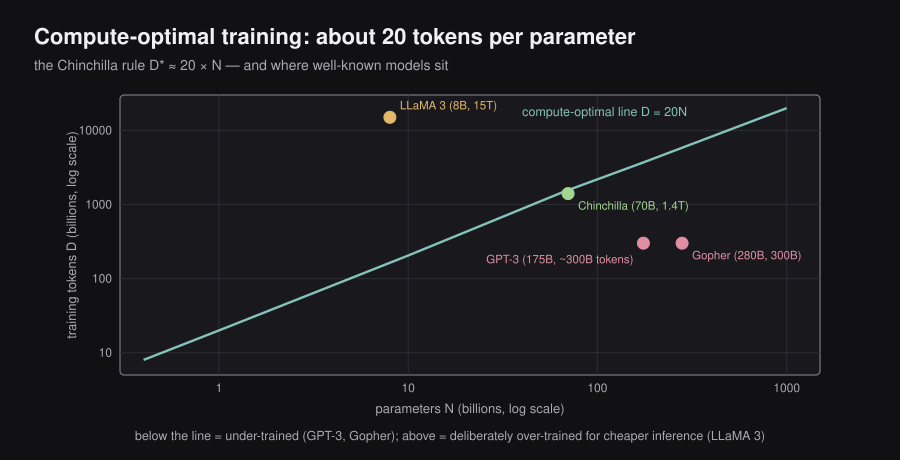
DeepMind answered this in 2022 (Hoffmann et al.) by training many models across many size and data combinations, finding the combination that achieved the lowest loss for each compute budget. Their result, known as the Chinchilla Scaling Law:
What this means:
- — the optimal number of training tokens
- — the number of model parameters
- For compute-optimal training: use approximately 20 tokens of training data per model parameter
Why “Chinchilla”: The paper’s Chinchilla model (70B parameters, 1.4T tokens) outperformed the much larger Gopher model (280B parameters, 300B tokens) trained by the same team at the same compute budget — proving that the balance between model size and data volume matters more than sheer size.
Concrete examples from the paper:
| Parameters () | Compute-optimal tokens () |
|---|---|
| 400 M | 8.0 B |
| 1 B | 20.2 B |
| 10 B | 205 B |
| 67 B | 1.5 T |
| 175 B | 3.7 T |
The GPT-3 revelation: GPT-3 had 175B parameters but was trained on only ~300B tokens — far less than the Chinchilla-optimal ~3.7T tokens. GPT-3 was massively undertrained on data. A smaller model trained on more tokens would have achieved better performance for the same compute budget.
Why modern LLMs over-train beyond Chinchilla: LLaMA 3 (8B parameters) was trained on 15 trillion tokens — roughly 94× the Chinchilla minimum of ~160B. The reason is economics: training is a one-time cost, but inference runs continuously in production. A model trained on more data is better at inference time, making it cheaper to serve at scale. Over-training beyond the compute-optimal point trades extra training cost for lower inference cost.
6.16 — Challenges of Pretraining
Pretraining is not without serious drawbacks:
| Challenge | Explanation |
|---|---|
| Cost | Frontier models cost millions to hundreds of millions of dollars and take months of GPU cluster time |
| Energy | The electricity and cooling required carry a significant carbon footprint |
| Knowledge cutoff | The model only knows information that existed before training ended; it is blind to anything newer |
| Hard to edit | You cannot surgically remove a false belief; fixing learned misinformation requires retraining or post-hoc correction |
| Memorization / copyright | The model can reproduce chunks of training text verbatim, creating legal and ethical risks |
6.17 — The Training Loop and Why Memory Is the Bottleneck
Before discussing solutions, we need to understand what happens during each training step and why GPU memory — not compute speed — is typically the limiting factor.
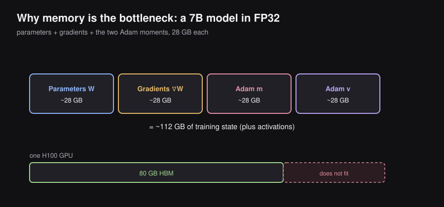
Every training step has four phases:
┌──────────────────────────────────────────────────────────────┐
│ 1. FORWARD PASS │
│ Input tokens → embeddings → transformer layers │
│ → output probability distribution → compute loss │
│ │
│ 2. BACKWARD PASS (backpropagation) │
│ Walk back through every layer. │
│ Compute ∂Loss/∂W for every weight W in the model. │
│ These derivatives are called "gradients". │
│ │
│ 3. OPTIMIZER UPDATE (Adam) │
│ Use gradients to update weights: │
│ W ← W − η · m̂ / (√v̂ + ε) │
│ where m̂, v̂ are running estimates of gradient │
│ statistics (first and second moments). │
│ │
│ 4. REPEAT │
└──────────────────────────────────────────────────────────────┘What must live in GPU memory at any moment:
| Component | Why it is needed | Memory (for 7B params in FP32) |
|---|---|---|
| Parameters | The model itself | ~28 GB |
| Activations | Intermediate outputs stored during forward pass for use in backward pass | Depends on batch size × sequence length |
| Gradients | One gradient per parameter, computed during backward pass | ~28 GB |
| Adam first moment | Running mean of gradients, one entry per parameter | ~28 GB |
| Adam second moment | Running variance of gradients, one entry per parameter | ~28 GB |
| Total (params + optimizer state) | ~112 GB |
A single NVIDIA H100 GPU has 80 GB of HBM. A 7B model’s training state already requires ~112 GB — it does not fit. This is the fundamental problem that the following optimizations address.
6.18 — Data Parallelism
Problem: Training is too slow on a single GPU, even when the model fits.
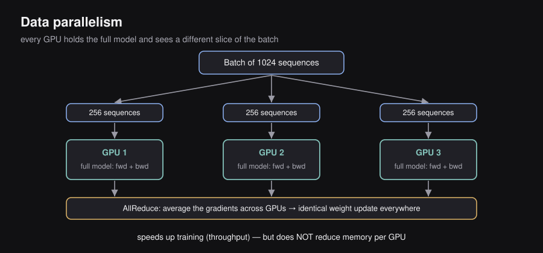
Idea: Replicate the entire model on each of GPUs. Split each batch of data so every GPU processes a different chunk simultaneously. After all GPUs compute their gradients, average them together using an operation called AllReduce, then update weights identically on all GPUs.
Batch of 1024 sequences
┌──────────┬──────────┬──────────┐
│ 256 seq │ 256 seq │ 256 seq │ ...
└────┬─────┴────┬─────┴────┬─────┘
▼ ▼ ▼
[GPU 1] [GPU 2] [GPU 3] ...
full model full model full model
forward+back forward+back forward+back
↓ ↓ ↓
└──────── AllReduce ─────────────┘
(average gradients across GPUs)
▼
identical weight update on all GPUsWhat it improves: Throughput — tokens processed per second. With GPUs, you effectively process times more data per step, so training finishes faster.
What it does NOT improve: Memory per GPU. Every GPU still holds the complete model, complete gradients, and complete optimizer state. If the model doesn’t fit on one GPU, data parallelism alone won’t help.
6.19 — ZeRO — Zero Redundancy Optimization
Problem: In vanilla data parallelism with 8 GPUs, you store 8 identical copies of parameters, gradients, and optimizer states — a staggering 8× waste of memory.
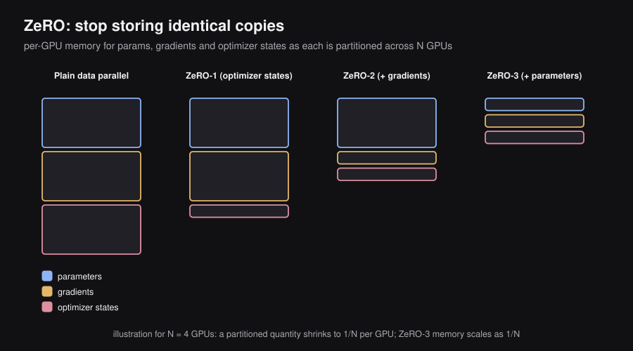
Solution: ZeRO (Zero Redundancy Optimization, Rajbhandari et al., 2019), implemented in Microsoft’s DeepSpeed library, eliminates this redundancy by partitioning these components across GPUs instead of replicating them. Each GPU only stores its assigned shard. When it needs another GPU’s shard during computation, it fetches it over the high-speed GPU interconnect (NVLink or InfiniBand).
ZeRO comes in three increasingly aggressive stages:
┌──────────────────────────────────────────────────────────────────┐
│ ZeRO Stage 1 — Partition optimizer states │
│ Each GPU holds optimizer states (m, v) for a slice of params. │
│ Parameters and gradients are still fully replicated. │
│ Memory saving: ~4× on optimizer states alone. │
├──────────────────────────────────────────────────────────────────┤
│ ZeRO Stage 2 — Partition optimizer states + gradients │
│ After each backward pass, each GPU only retains gradients for │
│ its own parameter slice; the rest are discarded. │
│ Memory saving: ~8× total. │
├──────────────────────────────────────────────────────────────────┤
│ ZeRO Stage 3 — Partition optimizer states + gradients + params │
│ Each GPU stores only a slice of the model weights themselves. │
│ Weights are gathered on-demand during forward/backward pass. │
│ Memory scales as 1/N with N GPUs — enables trillion-param │
│ models on clusters where no single GPU fits the full model. │
└──────────────────────────────────────────────────────────────────┘Trade-off: The memory savings come at the cost of communication. Fetching parameter shards from other GPUs during computation adds latency. In practice, this overhead is acceptable because it unlocks training of models that would otherwise be completely impossible.
Key point: ZeRO-3 is the standard technique for training 70B+ parameter models. The memory per GPU scales as with GPUs — the more GPUs you add, the more each GPU’s memory demand drops.
6.20 — Model Parallelism
An alternative family of approaches: instead of replicating the model and splitting data, split the model itself across GPUs. Different GPUs run different parts of the model for the same data.
| Strategy | How it works | Best for |
|---|---|---|
| Tensor Parallelism (TP) | Splits individual weight matrices column-wise or row-wise across GPUs. A single matrix multiply is distributed across several GPUs simultaneously. | Models with very wide layers (large hidden dimension) |
| Pipeline Parallelism (PP) | Assigns consecutive transformer blocks to consecutive GPUs. GPU 1 runs layers 1–10, GPU 2 runs 11–20, etc. Data flows through like an assembly line, with micro-batches pipelined to reduce idle time. | Very deep models; each GPU holds fewer layers |
| Sequence Parallelism (SP) | Splits long input sequences across GPUs, each processing a segment. Reduces activation memory proportionally. | Extremely long context windows |
| Expert Parallelism (EP) | For Mixture-of-Experts models: different expert sub-networks live on different GPUs. Tokens are routed to the GPU holding their assigned expert. | MoE architectures (DeepSeek, Mixtral) |
In production, all of these are typically combined simultaneously — so-called 3D or 4D parallelism. For example: data parallelism across nodes, tensor parallelism within a node, pipeline parallelism across nodes.
6.21 — FlashAttention
The Root Problem: Memory Bandwidth, Not Compute
Standard self-attention computes:
Variable meanings:
- — Query matrix; each of the sequence positions has a -dimensional query vector representing “what am I looking for?”
- — Key matrix; each position has a key vector representing “what do I offer?”
- — Value matrix; the actual information content each position will share if attended to
- — dimensionality of queries and keys; the scaling prevents dot products from growing too large in magnitude
- — raw attention score matrix; every token’s compatibility score with every other token
- — converts raw scores to probabilities (each row sums to 1)
- Final output — weighted sum of values, where weights come from the attention probabilities
Most people assume attention is slow because the matrix multiplication is expensive math. This is wrong. Modern GPUs can perform matrix multiplications at extraordinary speed. The real bottleneck is something different: moving data between the GPU’s two types of memory.
The GPU Memory Hierarchy
Every GPU has two very different types of memory with very different characteristics:
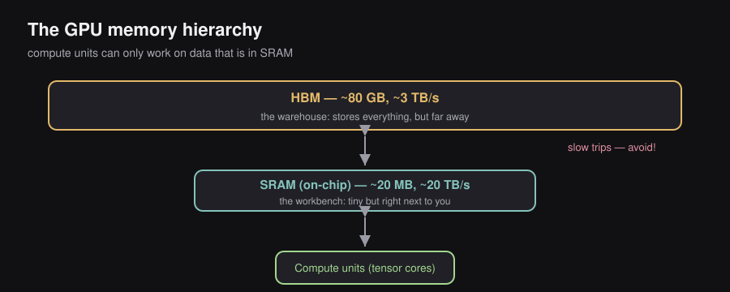
┌───────────────────────────────────────────────────────────┐
│ GPU │
│ │
│ HBM (High-Bandwidth Memory) │
│ • Full form: High-Bandwidth Memory │
│ • Size: ~80 GB on H100 │
│ • Bandwidth: ~3 TB/s (fast for DRAM, slow for GPU) │
│ • Think: a large warehouse — stores everything but far │
│ │
│ SRAM (Static Random-Access Memory, on-chip) │
│ • Full form: Static Random-Access Memory │
│ • Size: ~20 MB on H100 (20,000× smaller than HBM) │
│ • Bandwidth: ~20 TB/s (10–100× faster than HBM) │
│ • Think: the workbench — tiny but right next to you │
│ │
│ Compute Units (CUDA Cores / Tensor Cores) │
│ • Perform the actual arithmetic │
│ • Can only work on data currently in SRAM │
└───────────────────────────────────────────────────────────┘The critical constraint: compute units can only work on data in SRAM. Data sitting in HBM must be fetched into SRAM first, then results must be written back to HBM for storage. Each round-trip between HBM and SRAM takes time — and that is the bottleneck.
Standard Attention: The Wasteful Memory Traffic Pattern
Here is what standard attention actually does, step by step, in terms of memory movement:
1. LOAD Q, K from HBM into SRAM
↓
2. Compute S = QKᵀ / √d_k (arithmetic in compute units)
↓
3. WRITE S → HBM ← S is N×N; for N=4096, that is 64M entries. Slow.
↓
4. READ S ← HBM ← immediately read it back just to apply softmax
↓
5. Compute P = softmax(S) (arithmetic in compute units)
↓
6. WRITE P → HBM ← another huge N×N round-trip
↓
7. READ P, V ← HBM
↓
8. Compute O = PV (arithmetic in compute units)
↓
9. WRITE O → HBMSteps 3–6 write the full matrix to HBM and then immediately read it back — just to apply a softmax. For a sequence of 4,096 tokens, contains over 16 million entries. This is wasteful: and are temporary intermediate results, not things that need to be stored. Forcing them through HBM creates a massive bandwidth bottleneck that limits training speed.
FlashAttention: Two Ideas That Fix This
Idea 1 — Tiling (never write the full score matrix to HBM):
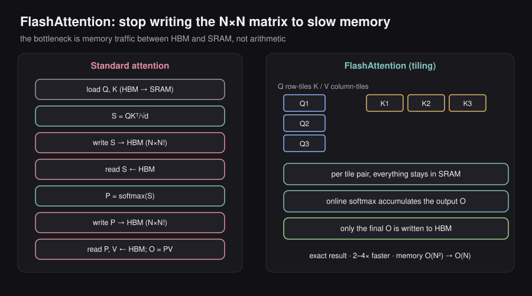
FlashAttention splits , , and into small tiles (blocks) that fit inside SRAM. It processes one tile at a time, entirely within SRAM, accumulates the output incrementally, and only writes the final output to HBM. The enormous intermediate and matrices never exist in their full form and never touch HBM.
Q split into row tiles: K split into column tiles:
┌────┐ ┌────┬────┬────┐
│ Q₁ │ │ K₁ │ K₂ │ K₃ │
├────┤ └────┴────┴────┘
│ Q₂ │
├────┤ For each tile pair (Qᵢ, Kⱼ):
│ Q₃ │ 1. Load Qᵢ and Kⱼ from HBM into SRAM
└────┘ 2. Compute attention scores for this tile (stays in SRAM)
3. Accumulate into running output Oᵢ (using online softmax)
4. Discard intermediate scores; move to next tile
Only the final Oᵢ result is written to HBM. Intermediates stay in SRAM.The online softmax trick — how tiling handles the normalization problem: Normally, to compute softmax for a row of , you need the entire row to compute the denominator . FlashAttention uses a running-maximum algorithm: as each tile is processed, it updates a running maximum and running sum. The final softmax values are exact — identical to what you would get computing the full matrix — but computed without ever having the full row in memory at once.
Idea 2 — Recomputation in the backward pass (trade arithmetic for memory traffic):
During a standard forward pass, the attention probabilities (shape ) are saved in HBM so that the backward pass can use them to compute gradients. FlashAttention instead recomputes during the backward pass using tiling, rather than loading it from HBM.
Standard: Forward saves P → HBM. Backward loads P ← HBM.
Cost: 2 × N² extra HBM reads and writes.
FlashAttention: Forward does NOT save P.
Backward recomputes P via tiling (stays in SRAM).
Cost: Extra arithmetic FLOPs, but zero extra HBM traffic.This trades arithmetic (more FLOPs) for memory bandwidth (fewer HBM accesses). Since HBM bandwidth is the bottleneck — not arithmetic — the trade is profitable. More FLOPs, lower wall-clock time. This is the counterintuitive but correct key insight.
Results of FlashAttention:
- 2–4× speedup in end-to-end attention computation
- Memory footprint for attention drops from to — enables much longer context windows
- Exact attention — not an approximation. Output is bit-for-bit identical to standard attention.
6.22 — Floating-Point Formats and Mixed Precision Training
Why Number Representation Matters
Every weight in a neural network is a floating-point number stored in memory using a fixed number of bits. The choice of format determines both memory usage and compute speed — and critically, which operations are numerically stable during training.
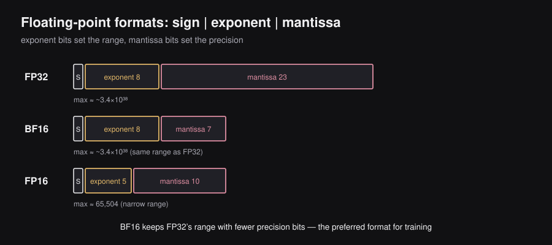
A floating-point number uses three fields:
| Field | Bits | Controls |
|---|---|---|
| Sign | 1 | Whether the number is positive or negative |
| Exponent | bits | The range of representable magnitudes |
| Mantissa | bits | The precision — how many significant digits |
The four formats relevant to LLM training:
| Format | Sign | Exponent | Mantissa | Max value | Notes |
|---|---|---|---|---|---|
| FP64 | 1 | 11 | 52 | Very high precision; rarely used in DL | |
| FP32 | 1 | 8 | 23 | Standard “full precision” baseline | |
| FP16 | 1 | 5 | 10 | 65,504 | Narrow range — risky for training |
| BF16 | 1 | 8 | 7 | Same range as FP32 — preferred for training |
The critical difference between FP16 and BF16:
FP16 has only 5 exponent bits, giving a maximum representable value of about 65,504. If any gradient or activation during training exceeds this (which happens easily with large models), it becomes inf or NaN. Training crashes. This makes FP16 fragile.
BF16 (“Brain Float 16”, developed at Google Brain) keeps FP32’s 8 exponent bits — the same representable range — while trimming the mantissa from 23 to 7 bits. You lose precision granularity but keep the range. For LLM training, BF16 is almost always preferred over FP16. On modern GPUs (A100, H100), both run at roughly 2× the throughput of FP32.
Mixed Precision Training — The Key Strategy
The core problem: You want FP16/BF16 speed (2× faster compute, 2× less memory), but FP32 stability for weight updates. Using only one format everywhere is suboptimal.
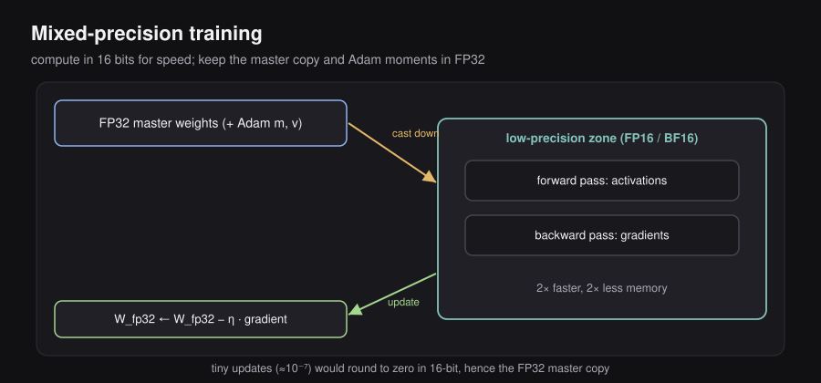
The solution: Use different formats for different parts of the training loop based on their numerical sensitivity.
| Operation | Format | Reason |
|---|---|---|
| Forward pass (activations) | FP16 / BF16 | Transient values; small rounding errors are acceptable and do not accumulate |
| Backward pass (gradients) | FP16 / BF16 | Also transient; acceptable precision loss |
| Stored master weights | FP32 | Weight updates can be as tiny as ; FP16 would round these to exactly zero |
| Adam optimizer moments (, ) | FP32 | Accumulate over thousands of steps; must not lose precision over time |
┌──────────────── FP32 master weights (stored in HBM) ────────────────┐
│ │
│ Cast down to FP16/BF16 ↓ ↑ Update master weights │
│ │
│ ┌──────────── Low-precision compute zone ──────────────────┐ │
│ │ Forward pass: activations in FP16/BF16 │ │
│ │ Backward pass: gradients in FP16/BF16 │ │
│ └──────────────────────────────────────────────────────────┘ │
│ │
│ Master weight update: W_fp32 ← W_fp32 − η · gradient_fp16 │
└──────────────────────────────────────────────────────────────────────┘Why the FP32 master weight is essential: Suppose a weight is 0.500000 and the gradient update says to move by 0.000001. In FP16 (limited precision), 0.500001 rounds back to 0.500000 — the update completely vanishes. The weight stops learning. Accumulated over millions of steps, training stalls. The FP32 master weight captures the tiny cumulative movements correctly, even when they are too small for FP16 to represent.
6.23 — Key Equations Reference
| Concept | Equation | Plain English |
|---|---|---|
| Router score | Dot product between token embedding and expert direction | |
| Router probability | Softmax converts scores to routing probabilities | |
| Sparse MoE output | Weighted sum of top-k expert outputs | |
| DeepSeek MoE output | Shared expert always active + top-k routed experts | |
| Load balance loss | Penalizes dominance of any single expert | |
| Noisy routing | Random noise forces exploration of all experts | |
| Bias-based balancing | Bias adjusts selection without polluting gradients | |
| Greedy decoding | Pick the most probable token every step | |
| Beam score | Cumulative log-probability of a candidate sequence | |
| Top-k sampling | Sample from the most probable tokens | |
| Top-p (nucleus) | Smallest set of tokens covering fraction of probability | |
| Temperature | Dividing logits by reshapes distribution sharpness | |
| Guided decoding | Mask invalid tokens; renormalize over legal tokens only | |
| Chain of Thought | Answer conditioned on both question and reasoning chain | |
| Self-Consistency | Marginalize answer over multiple reasoning paths | |
| KV cache memory | Grows linearly with sequence length | |
| Expert capacity | Max tokens per expert per batch | |
| Spec. decoding acceptance | Accept draft token if target model agrees | |
| MTP training loss | Predict next tokens simultaneously |
6.24 — Reference Papers
| Topic | Paper | Year |
|---|---|---|
| Original Sparse MoE | Shazeer et al. — Outrageously Large Neural Networks | 2017 |
| Switch Transformer (Top-1 + load balance loss) | Fedus et al. — Switch Transformers | 2021 |
| Mixtral | Jiang et al. — Mixtral of Experts | 2024 |
| DeepSeekMoE (shared + fine-grained experts) | DeepSeek-AI — DeepSeekMoE | 2024 |
| Aux-loss-free balancing | DeepSeek-V3 Technical Report | 2024 |
| PagedAttention / vLLM | Kwon et al. | 2023 |
| Grouped Query Attention | Ainslie et al. | 2023 |
| Speculative Decoding | Chen et al. — Accelerating LLM Decoding with Speculative Sampling | 2023 |
| Multi-Token Prediction | Gloeckle et al. — Better & Faster LLMs via MTP | 2024 |
| Chain of Thought | Wei et al. — CoT Prompting Elicits Reasoning | 2022 |
| Self-Consistency | Wang et al. — Self-Consistency Improves CoT | 2022 |
| Context Rot | Hong et al. | 2025 |
| Few-Shot ICL | Brown et al. — Language Models are Few-Shot Learners | 2020 |